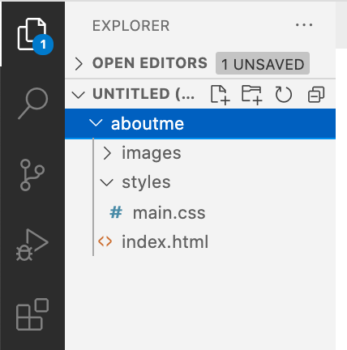
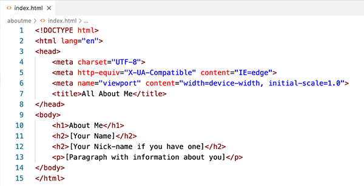
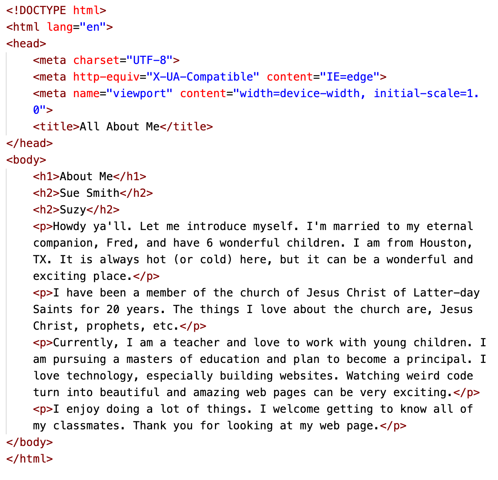
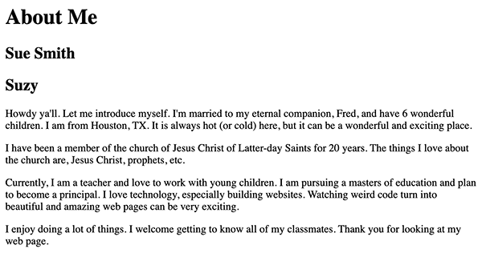

Task: Create a web page using HTML that has a short biography and picture.
Purpose: Introduce the students to HTML and each other.
Background
This week we have two important goals. One to introduce you to HTML, and two to introduce you to each other. With this activity we will accomplish both. Make sure to read the instructions and their explanations carefully.
Instructions
Estimated Time: 60 minutes
Setup
If you haven’t already, make sure to complete the
instructions in the
Software Setup activity.
Our first HTML
Let's write some HTML. Open VSCode, and make sure you are on the Explorer icon so you can see your folders and files. The files and folders might look like this:

File Management
We will only be using the index.html file and placing one image inside the images folder for this activity. In future activities, we will have a similar file management structure and will have files in other folders. But only index.html and the one image will be used this week.
This code contains everything you need for a basic web page. It
has tags, elements, nesting,
parent elements, child elements, and semantics. Can you spot them
all?

About Me index.html code
The title tag will show up as the name or tab of the window in the browser.
Everything inside the body tags will show up on the web page.
Each page should have one 'h1' tag with the main headline of the page. The 'h2' tags are sub-headings.
Add the h1 and h2 tags with your information.
Then write a paragraph or two to tell a little bit about yourself. Here is a list of ideas to talk about to get you
started. You don't have to write about all of them.Remember that this will be a public website...so
don't put anything too personal or identifying.
Your first name and perhaps a nick-name.
What degree and/or career path are you headed down.
What are some of the things you love to do, hobbies.
Are you married, do you have children, grandchildren...
Do you have a current career/job... are you making a change by
pursuing your education.
The thing you love most about BYU-Idaho. What degree are
you pursuing? AA BS, WDD?
The advantages you see from learning about careers in web
design, why you are taking the course, what you hope to get
out of it, and how you will use the information in your
personal or professional life.
How long have you been a member of the Church of Jesus Christ
of Latter Day Saints? Do you have a favorite quote from
one of the leaders of the church? Do you have a favorite
scripture?
Anything else you may want to share.
Start with the <p> (paragraph) that says "[Paragraph with information about you]". Replace that with your own information and wording. You don't need the '[ ]' square brackets. They are just there to show what text you will replace.
Each time you want a new paragraph (please break it into more than
one paragraph!) Add a new
<p></p> element.
View your work
When you have finished adding your paragraphs you will want to
view your webpage. To do this right-click anywhere in the html file and from the pop-up menu choose 'Open with Live Server' and your default browser will render the html code and show your page as it would be seen on a browser.
Menu when you right-click html file
Your HTML might look something like the image below:

HTML example
Your page might look something like the image below:

Resulting page
Add an image
Look's good, but it is a little plain. Let's add an image to
dress up your page.
Place an image of yourself inside the images folder.
Put your image right after the <h1> line. You will start
with the <img> tag. Images require additional
information in order to work however. We have to tell the browser
where to find the image. We can use an "attribute" for this. The attribute
we need is src="". Add this right after the word
img. So it will look like this:
<img src="">
The name and path of your image will go into the "" after the
src. Your file name will be whatever you named your image. The final tag should look something like this:
<img alt="Image of me?" src="images/myphoto.jpg" >
Notice that I included an extra attribute:
alt. The alt attribute
should contain a short description of the image. It is shown if
the browser can't find the image or it is read for visually
impaired visitors to your site. All of your
images should have an alt attribute. If a tag has
multiple attributes, the order of the attributes does not matter.
There, that looks great.... you coded a web page about yourself
that is simple, informative, and has a touch of style.
Your final page should look something like the pages below but
with your information and your actual image.
Final Example Preview
Take a screen shot of this page.
Don't know how to take a screenshot? This How to Take a Screenshot" article shows how to do it on many different devices including Windows and a Mac iOS towards the end of the article.
Post to the discussion board
Lastly, go to the Getting to Know You discussion board, which is at the bottom of the assignment, and do the
following things:
Click the 'Reply' bar
Reply bar in discussion board
Make a new post.
Upload your screenshot of your page as it looks rendered by the browser (not your code).
Click on the "Upload Image" icon and place your screenshot image in your post.
Upload your Screenshot in discussion
Add contact information to the discussion board post if you
would like to make that available to your fellow classmates.
In the group portion of the assignment, view your fellow
student's web pages to get to know those in your class and
make comments on at least 5 of your peers web pages. Take some time to get to know your fellow classmates and who
knows, you might even make a friend or two!